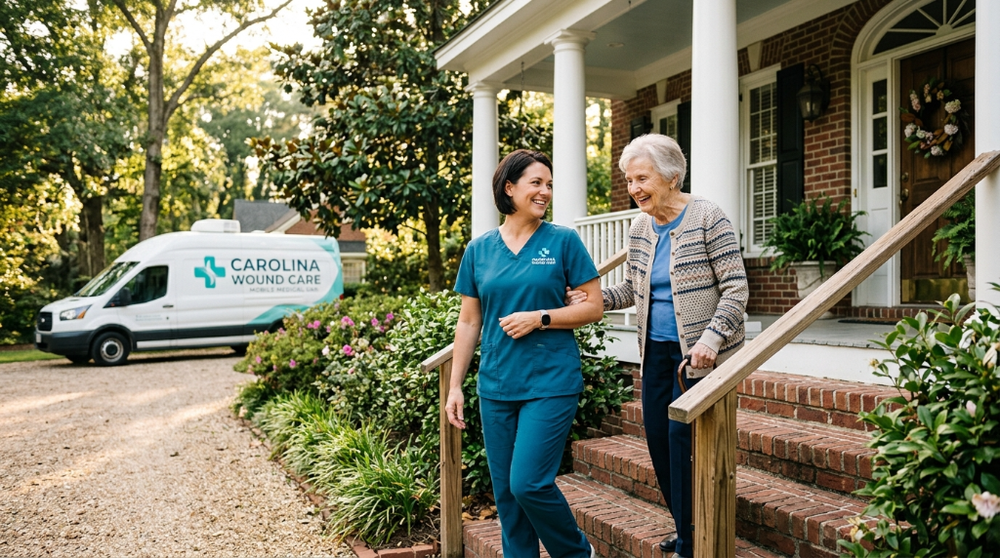
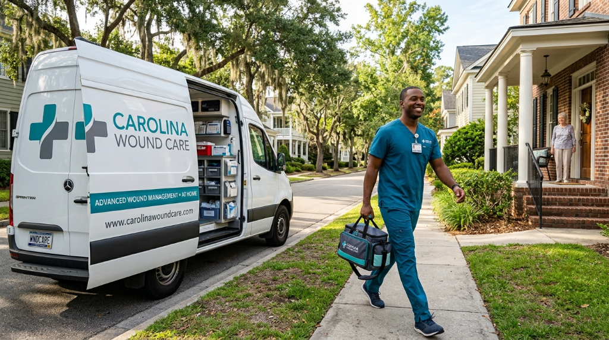

Compassionate Expert Care for Wounds That Won't Heal
We believe every patient deserves access to advanced wound care — in a clinic or in the comfort of their own home.
Our Mission
To provide compassionate, evidence-based wound care for patients with chronic wounds that won't heal — delivering the same level of advanced treatment found in hospital-based wound centers, without the hospital. We come to our patients, wherever they are in South Carolina.
Independent. Patient-First. Expert.
Carolina Wound Care is an independent, specialized wound care practice based in Aiken, South Carolina. We are not affiliated with any hospital system — which means our only focus is on you and your healing.
Our team of board-certified wound care specialists brings decades of combined experience treating the most complex chronic wounds. We combine the latest evidence-based treatments with a deeply personal, compassionate approach to care.
What sets us apart? We actually come to you. Our true mobile wound care service means patients who struggle with transportation or mobility never have to go without the advanced treatment they need.
- Board-certified wound care specialists
- Independent — no hospital affiliation or system constraints
- In-clinic (Aiken, SC) + true mobile in-home service
- Medicare & most PPO insurance accepted
- Serving all 46 South Carolina counties

Our Core Values
Everything we do is guided by these principles — from how we treat patients to how we develop care plans.
Compassion First
We treat every patient as a person, not a wound. We take time to listen, explain, and care — with warmth and empathy at every visit.
Clinical Excellence
We stay at the forefront of wound care science, using only evidence-based, clinically validated treatments that deliver real, measurable results.
Radical Accessibility
We believe geography and mobility should never be barriers to expert care. Our mobile service brings the clinic to you — no exceptions.
Integrity & Transparency
Honest communication about your treatment, your progress, and your costs — always. We handle insurance and billing so you don't have to worry.
Personalized Partnership
No one-size-fits-all protocols. Every care plan is designed specifically for you, your wound, and your life — and updated as you progress.
Trust & Safety
Your safety and privacy are paramount. We follow all HIPAA guidelines and maintain the highest clinical safety standards at every visit.
Why Patients Choose Carolina Wound Care
We're not your typical wound care center. Here's what makes our approach uniquely effective.

True In-Home Mobile Service
We don't just send a nurse for dressing changes. We bring full, advanced wound care capabilities to your home — debridement, grafts, specialized dressings, and personalized care planning.
Not Hospital-Affiliated
Without hospital-system bureaucracy, we can be more responsive, flexible, and patient-focused. We come to you faster, spend more time with you, and tailor care completely to your needs.
Same-Week Access to Care
No long waiting lists. Wounds don't wait — neither do we. Most patients are seen within the same week they contact us, in-clinic or at home.
Fully Personalized Care Plans
Your care plan is created specifically for your wound type, medical history, lifestyle, and goals. We continuously adapt it based on your healing progress.
Insurance Handled For You
Our team verifies your Medicare or PPO coverage and handles all prior authorizations and billing — so you can focus entirely on healing.
Statewide South Carolina Reach
From Aiken to Myrtle Beach, Greenville to Hilton Head — our mobile team serves all 46 South Carolina counties, bringing expert care to underserved communities.
Our Locations & Service Area
Two clinic locations plus true mobile in-home service — across all of South Carolina.
Aiken Wound Care Clinic
Our flagship wound care center
Charleston Wound Care Clinic
Serving the Charleston area
All 46 South Carolina Counties
We travel to homes, assisted living facilities, nursing homes, and communities statewide — no transportation needed.
Ready to Get the Expert Wound Care You Deserve?
Schedule a free consultation — in our Aiken clinic or at your home across South Carolina. Medicare accepted.